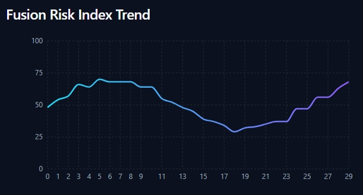

The BlockDAG-Powered Predictive Oracle for DeFi Risk
SentinelX provides real-time risk scoring and market intelligence, empowering lenders, insurers, and traders to automate decisions and protect capital.
Introducing the Fusion Risk Index (FRI)
The FRI is the singular, trusted metric generated by SentinelX, combining deep on-chain metrics with live off-chain sentiment signals, published in **near real-time via BlockDAG** for instant decision automation.
The Data Fusion Engine
We ingest two powerful data streams to forge a truly predictive risk score.
On-Chain Financial Metrics
- Liquidity Depth: Real-time analysis of available capital.
- Collateralization Ratios: Monitoring health of lending protocols.
- Liquidation Risk: Proactive flagging of protocol vulnerability.
- Wallet Activity & Large Transaction Flows.
Off-Chain Behavioral Signals
- Social Media Sentiment: Real-time mood analysis from major platforms.
- News & Media Chatter: Algorithmic news event detection.
- Community Health: Identifying key shifts in community discussions.
- Developer Commit Activity and Code Audits.
Powered by BlockDAG Architecture
SentinelX utilizes a cutting-edge BlockDAG structure to ensure the Fusion Risk Index (FRI) is published and available on-chain with unprecedented speed and finality.
- High Throughput: Massive data streams processed simultaneously.
- Near Instant Finality: Risk scores accessible precisely when needed.
- Automation Ready: Directly feeding smart contracts for automated decisions.

Visual: BlockDAG architecture for rapid consensus and data publishing.
Ready to Automate Smarter Risk Management?
Reduce insolvency losses, flag risks early, and optimize your capital allocation today.
Explore SentinelX Platform